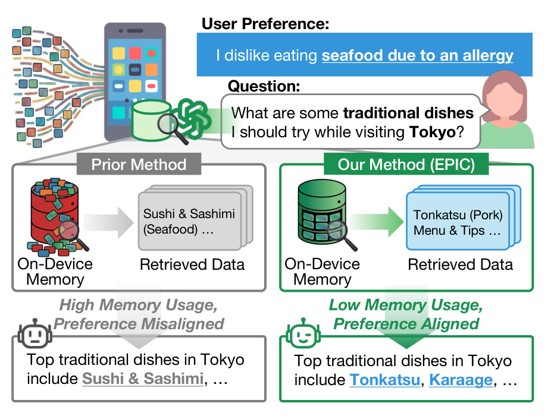
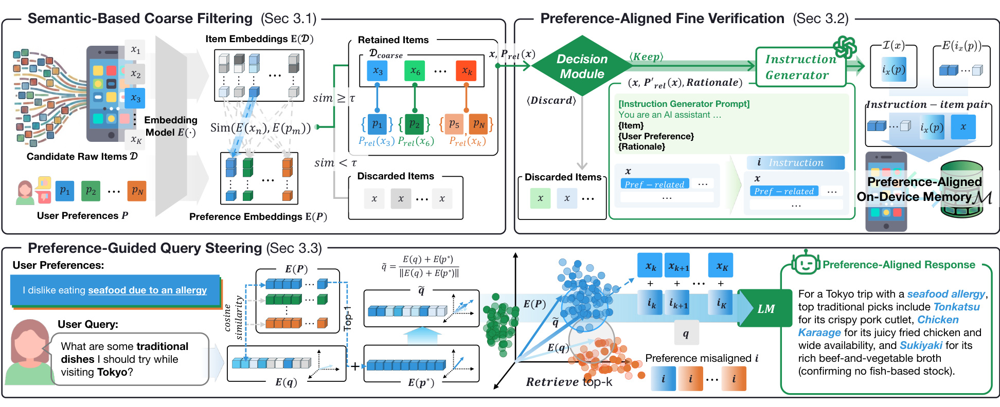
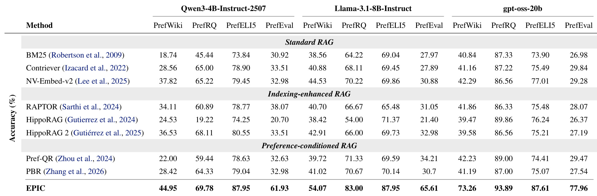
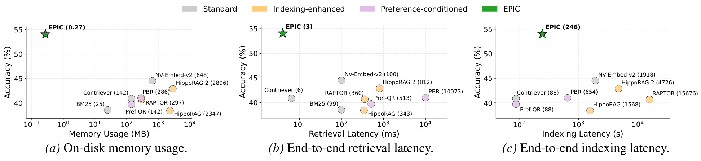
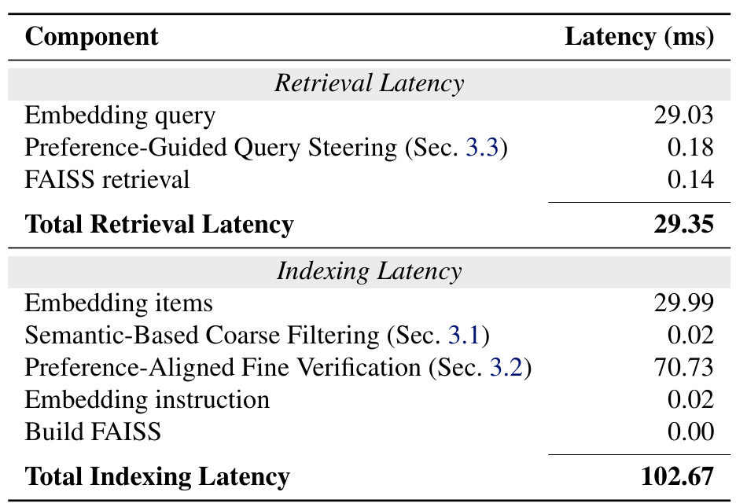

这里重新精读一篇最近公开的论文《From Volume to Value: Preference-Aligned Memory Construction for On-Device RAG》。中文可以叫《从容量到价值：端侧 RAG 的偏好对齐记忆构建》。
论文链接：https://arxiv.org/abs/2605.18271 PDF：https://arxiv.org/pdf/2605.18271 代码/项目页：未公开 公开日期：2026-05-18，来源：arXiv cs.CL/cs.AI/cs.IR/cs.LG / ICML 2026 proceedings note，arXiv ID：2605.18271。
0. 导读
EPIC 关注个人 AI agent 的端侧 RAG 记忆构建。传统 RAG 的默认思路是尽量多存文档、聊天记录、网页和用户历史，然后靠检索找相关内容。但端侧个人智能体的约束完全不同：设备内存有限，检索必须低延迟，数据最好不上传云端，而且用户请求经常依赖个人偏好。论文的核心观点是：端侧 RAG 的关键不是 volume，而是 value。不要无差别保存原始资料，而要识别哪些内容和用户稳定偏好相关，并把它们压缩成偏好对齐的索引。
EPIC 的全称是 Efficient Preference-aligned Index Construction。它把个人偏好作为紧凑、稳定、对回答影响大的上下文形式，设计了粗过滤、细验证和偏好引导查询三段 pipeline。实验结果非常醒目：索引内存减少 2404 倍，preference-following accuracy 提高 20.17 个百分点，检索延迟降低 33.33 倍；在 Jetson Orin Nano 8GB 上，总 retrieval latency 为 29.35ms/query，内存低于 1MB。对端侧推荐、个人助手、长期兴趣建模来说，这篇论文的思路比单纯压缩向量库更有启发。
1. 背景与问题
个人 AI 的核心差异在于同一个问题对不同用户有不同答案。用户问“去东京应该吃什么”，普通 RAG 可能检索到寿司和刺身；如果用户有海鲜过敏，正确答案就应该避开海鲜，推荐炸猪排、唐扬鸡等。这个例子说明，个人偏好不是普通背景资料，而是会改变答案选择的约束。
云端 RAG 可以靠大索引、长上下文和强模型来弥补粗糙记忆，但端侧不行。端侧有三个硬约束。第一是内存，手机、IoT、边缘设备不能无限保存向量索引。第二是延迟，个人助手交互需要接近实时，不能每次检索都调用重型 LLM query rewriting。第三是隐私，很多个人偏好和历史不适合上传云端。EPIC 的问题定义就是：在这些约束下，应该存什么，如何存，查询时如何利用。
论文反对“indiscriminately stores raw data”。如果把所有原始资料都存下来，会出现两个问题。一个是资源不可承受，索引会持续膨胀；另一个是偏好不对齐，检索器可能因为字面相关性找到与用户偏好冲突的内容。EPIC 认为端侧 memory 应该先做内容级选择，只保留 preference-relevant items，再把这些 items 转成更紧凑的 instruction-like memory。
2. 核心方法
EPIC 有三段。第一段是 Semantic-Based Coarse Filtering。系统先把候选原始文档和用户偏好都编码成 embedding，计算 item 与 preference embeddings 的相似度，只保留超过阈值的候选。这个阶段非常便宜，目的是早期丢掉大量明显无关内容，避免后续 LLM 处理成本爆炸。它负责 memory saving 的大头。
第二段是 Preference-Aligned Fine Verification。粗过滤只看向量相似度，可能保留部分噪声，也可能错过需要推理才能判断的偏好相关内容。因此 EPIC 用一个 decision module 进一步判断候选 item 是否真的 preference-related，并生成 instruction-item pair。这个 pair 不只是原文片段，而是带有偏好语义的紧凑表达。这样索引内容从“原始资料”变成“偏好相关说明”。
第三段是 Preference-Guided Query Steering。查询时，EPIC 不只用原始 query 去检索，而是把 query embedding 和最相关 preference embedding 结合，形成偏好引导的查询表示。这样做可以避免纯字面匹配。例如 query 提到东京美食，纯检索可能找海鲜；偏好 steering 会把海鲜过敏偏好注入检索方向，优先找不冲突的内容。
从系统角度看，EPIC 同时改变了 indexing 和 retrieval。很多个性化 RAG 只在 query 端重写，或者只在 prompt 里加入用户 profile；EPIC 更前置，它在 memory construction 阶段就决定哪些内容能进入端侧索引。这样可以同时降低内存、降低检索延迟和提高偏好跟随。
3. 图表解读

图 1 是最直观的例子。用户偏好是“不吃海鲜，因为过敏”。普通方法把东京传统饮食资料原样存入 memory，检索时可能返回 sushi、sashimi 等与偏好冲突的内容。EPIC 则在 memory construction 阶段保留与偏好对齐的信息，例如 tonkatsu、karaage，并在回答中避开海鲜。这个图说明 EPIC 不是一般的信息压缩，而是偏好对齐的选择性记忆。对推荐系统来说，这相当于把用户硬约束和长期偏好提前写进候选集合。

图 2 展示完整 pipeline。左侧 coarse filtering 用 embedding similarity 从大 corpus 中筛出与 preferences 相关的 items；中间 fine verification 用 decision module 生成 keep/discard 结果，并把保留项转成 preference-aligned instruction-item pairs；右侧 query steering 把用户 query 和相关 preference 结合，再从 on-device memory 中检索。图中三段对应三个不同目标：降低候选规模、提高记忆质量、提高查询偏好对齐。缺任何一段都不完整。

表 2 是整体结果，覆盖 PrefWiki、PrefRQ、PrefELI5、PrefEval 四个 benchmark 和 Qwen3-4B-Instruct-2507、Llama-3.1-8B-Instruct、gpt-oss-20b 三个后端模型。EPIC 在多个任务上显著高于 BM25、Contriever、NV-Embed-v2、RAPTOR、HippoRAG、Pref-QR、PBR。比如在 Llama backend 下，PrefWiki 从强 baseline 的 44 左右提升到 54.07，PrefRQ 到 83.00，PrefELI5 到 87.95，PrefEval 到 65.61。这个表说明 EPIC 的收益不是某个生成模型偶然配合，而是 memory construction 本身提高了偏好可检索性。

图 3 是效率对比，横轴分别是内存、检索延迟、索引延迟，纵轴是准确率。EPIC 的点非常靠左且准确率较高。内存图里，EPIC 只有约 0.27MB，而 HippoRAG、HippoRAG 2 等方法是数千 MB 级别。检索延迟图里，EPIC 约 3ms 的检索侧开销，远低于 PBR 这类需要重型 query expansion 的方法。这个图支撑了论文题目里的 from volume to value：不是索引越大越好，而是存对内容更重要。

表 3 是 Jetson Orin Nano 8GB 的端侧延迟拆解。Retrieval latency 中，embedding query 为 29.03ms，preference-guided query steering 只有 0.18ms，FAISS retrieval 只有 0.14ms，总计 29.35ms。Indexing latency 中，fine verification 是主要成本 70.73ms，embedding items 为 29.99ms，总计 102.67ms。这个表告诉我们 EPIC 的在线查询足够轻，主要成本在增量写入和验证阶段。对真实端侧 agent，这是合理 trade-off：写入可以异步，查询必须快。
4. 实验与结果
论文构造和使用了四类 preference-aware RAG benchmark。PrefWiki 和 PrefRQ 基于 Wikipedia 这类静态知识 corpus，PrefWiki 偏推荐任务，PrefRQ 偏辩论或观点相关任务；PrefELI5 来自 Common Crawl/web-derived footprint，偏解释任务；PrefEval 则来自对话历史。表 1 中可以看到 PrefWiki 使用 6.9M 文档、57 personas、570 preferences、2,850 questions；PrefRQ 使用 6.9M 文档、90 personas、900 preferences、900 questions；PrefELI5 使用 16.4M 文档、73 personas、730 preferences、730 questions。这些设置比单一聊天记忆更全面。
评估指标是 preference-following accuracy，也就是回答是否遵守用户偏好。论文用 LLaMA 3.3 70B-Instruct 作为评估器，判断 response 是否有 preference violation。同时报告内存、检索延迟、索引延迟等端侧关键指标。
总体结果显示，EPIC 不只是更省内存，也更准。它相比标准 RAG、indexing-enhanced RAG 和 preference-conditioned RAG 都有明显优势。摘要里的汇总数字是内存减少 2404 倍，preference-following accuracy 提高 20.17 个百分点，检索延迟降低 33.33 倍。注意这三个指标同时改善很难，因为通常更小索引会损失准确率，而 EPIC 通过偏好相关选择让索引变小但更有用。
消融实验很清楚。粗过滤 C 单独使用时，内存大幅下降，但准确率不一定提高，例如 PrefWiki 从 40.88 到 37.26，说明 embedding similarity 会丢掉或误保留一些关键内容。加入 fine verification F 后，PrefWiki 到 52.53，PrefRQ 到 82.22，PrefELI5 到 85.48，PrefEval 到 61.58，说明 LLM 级 verification 对偏好对齐很关键。再加入 query steering S 后，准确率进一步到 54.07、83.00、87.95、65.61，且内存不增加。这个消融很好地分离了三个模块的作用：C 负责省内存，F 负责提质量，S 负责查询时用好偏好。
5. 我的理解
EPIC 最有价值的地方是重新定义了“个人记忆”的单位。很多 memory-augmented agent 工作会把历史片段、summary、profile 都存进 memory，然后研究如何检索。EPIC 更前置地问：什么内容值得被存？它的答案是 preference-relevant information。这个思路对推荐系统很熟悉，因为推荐里的用户画像也不是保存所有行为，而是抽取稳定兴趣、禁忌、预算、场景偏好。EPIC 把这种思想迁移到端侧 RAG。
我也很认同它对 on-device 的定位。端侧个性化不可能依赖无限大向量库，也不应该每次查询都调用大模型重写 query。真正可行的系统应该把重活放在低频写入阶段，把高频查询做得极轻。EPIC 的 latency breakdown 说明它基本符合这个原则：query steering 和 FAISS search 都很轻，fine verification 主要在 indexing 阶段。
可能被高估的地方是 benchmark 偏好是否足够真实。真实用户偏好会冲突、变化、模糊，并且有隐私边界。例如用户可能平时不吃海鲜，但在商务场合要推荐海鲜餐厅给别人；用户可能预算低，但某些品类愿意高消费；一个设备可能被多人共享。EPIC 当前更像处理明确、显式、稳定偏好。要进入真实个人 AI，还需要偏好冲突管理、上下文条件偏好、多人 profile 隔离和遗忘机制。
6. 工程启发与复现建议
复现 EPIC 可以先做小规模版本。准备一个文档库、一组用户 persona 和偏好，例如饮食禁忌、预算、语言风格、品牌偏好。第一步实现 coarse filtering，用 embedding 模型计算 item 与 preference 的相似度，阈值可以从 0.2、0.3、0.4 sweep。第二步实现 fine verification，可以用一个本地或云端 LLM 判断 item 是否与 preference 相关，并让它输出 compact instruction。第三步把 instruction embeddings 建 FAISS index。查询时，检索最相关 preference，再把 query embedding 与 preference embedding 做组合或加权。
评估要同时看准确率和资源。准确率可以用人工或 LLM judge 判断回答是否违反偏好；资源要看索引大小、检索 latency、写入 latency、增量更新成本。尤其要做 drift 测试：用户偏好变化后，旧 memory 是否仍然影响回答，新偏好能否快速生效。论文的 Figure 4 就是这类 streaming drift 设置。
如果迁移到推荐系统，可以把 EPIC 看成端侧长期兴趣库。不是保存用户全部点击，而是保存稳定偏好和硬约束，例如过敏、尺码、价格带、品牌黑名单、内容风格偏好。召回或重排时用这些偏好做 query steering 或候选过滤。这样既能保护隐私，又能降低端侧存储。
7. 局限与风险
-
偏好抽取依赖显式偏好。EPIC 假设已有 user preferences，真实系统中偏好往往需要从行为中推断，容易误判。
-
粗过滤可能丢掉弱相关信息。embedding similarity 对隐含偏好、反事实偏好和长尾概念不一定敏感，早期 discard 后很难恢复。
-
fine verification 仍有 LLM 成本。虽然查询很轻，但写入阶段需要 decision module，端侧完全本地化时可能受小模型能力限制。
-
偏好漂移和遗忘机制还不充分。论文展示了 drift 下的鲁棒性，但长期使用中偏好过期、临时偏好和永久偏好需要不同管理策略。
-
隐私安全风险。端侧保存偏好虽然减少上传，但一旦设备被访问，偏好 memory 可能暴露敏感信息，需要加密和权限控制。
-
任务范围限制。只保存偏好适合个性化问答和推荐，但不适合需要完整事实追溯、审计和证据链的任务。
8. 后续跟进
-
跟进是否开源代码，重点看 decision module 的 prompt、阈值和 instruction 生成格式。
-
对比 RecMem、H-Mem、LongMINT、EvoMemBench 等 agent memory 工作，看 EPIC 的 what-to-store 能否和 memory lifecycle 结合。
-
尝试把 EPIC 与向量量化、低比特索引、RaBitQ/BPR 类压缩方法结合，先内容级筛选，再向量级压缩。
-
在推荐系统中做端侧偏好黑白名单实验，验证它对候选过滤、rerank 和解释生成的价值。